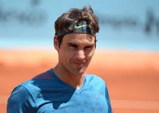
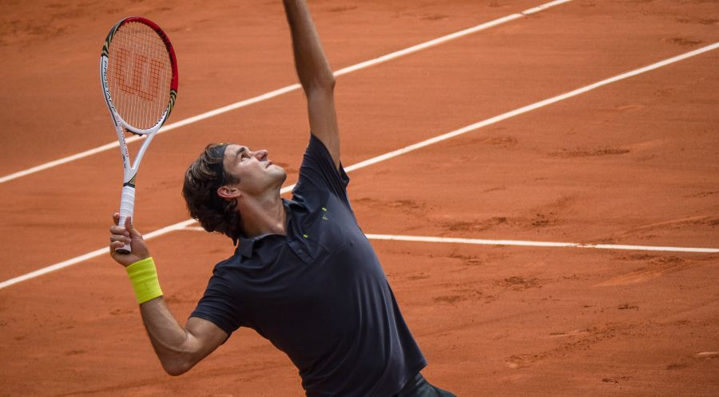
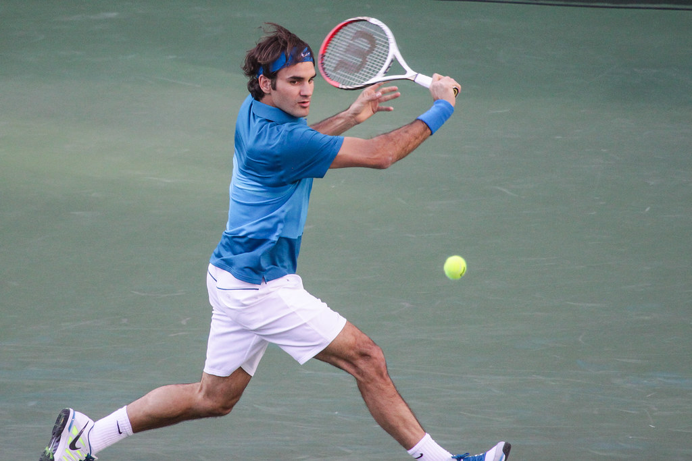

Roger Federer has been out of the game since Wimbledon of last year due to his third knee surgery in 18 months. His career has been on pause since July due to the set back with his knee injury, which also kept him out of the 2020 season after the Australian Open. Even though he has been out the game for a while, he has been preparing to make a comeback at the Laver Cup this year. Unfortunately, this will be Federers last tournament ever as he just announced his retirement. However, through his composure and grace throughout the game and the many precedents he set Roger Federer will always be known as the greatest of all time and will never be forgotten throughout tennis history.
  